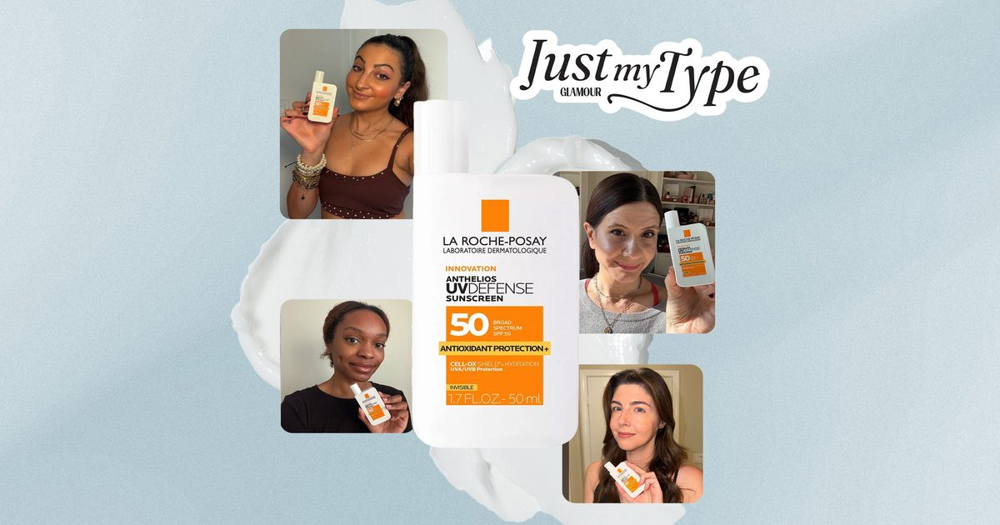

Четыре редактора протестировали новый SPF 50 от La Roche-Posay с фильтром BEMT
В США появился первый солнцезащитный крем с одобренным FDA фильтром бимотризиол, который десятилетиями использовался в Европе и Азии. Редакторы Glamour с разными типами и тонами кожи проверили, как новая формула La Roche-Posay Anthelios UVDefense SPF 50 ведёт себя в реальных условиях — от чувствительной кожи до жирной Т-зоны и макияжа поверх.
Почему фильтр BEMT считается прорывом
Фильтр бимотризиол, или BEMT, получил одобрение FDA только в этом году, хотя за рубежом он применяется уже десятки лет. Его главное отличие — способность одновременно блокировать лучи UVA и UVB при крайне лёгкой текстуре, которая почти не ощущается на коже. В отличие от многих химических фильтров, BEMT не оставляет белковый налёт даже на тёмной коже, что долгое время оставалось главной проблемой для носителей с высоким содержанием меланина.
В составе Anthelios UVDefense новый фильтр дополнен антиоксидантами для защиты от окислительного стресса, а формула сделана без масел, парфюма и некомедогенна. Это означает, что крем не забивает поры и подходит для чувствительной кожи. Текстура описаны как молочная, почти жидкая при нанесении, но мгновенно впитывающаяся без остатка — эффект «невесомости», который позволяет наносить тональный крем или румяна сразу же без риска скатывания.
Технология Cell-Ox Shield сочетает солнцезащитные фильтры с антиоксидантным комплексом, что даёт двойную пользу: предотвращает фотостарение и нейтрализует свободные радикалы. Для американского рынка это событие сравнимо с появлением нового класса препаратов, так как ранее доступные фильтры либо давали налёт, либо имели более тяжёлую текстуру, либо требовали частого обновления из-за нестабильности.

Как крем ведёт себя на разной коже
Четыре редактора с разными типами кожи отметили схожую динамику: первоначально текстура может казаться скользкой или даже жирной, особенно в Т-зоне, но за минуту-две она «расплавляется» и переходит в матовую, увлажнённую финиш. У редактора с проблемной кожей не возникло новых воспалений за несколько недель теста, а чувствительная кожа не отреагировала жжением или покраснением — важный маркер для безпарфюмерных формул.
Редактор с тёмным тоном кожи подчеркнул полное отсутствие белкового или фиолетового налёта — частый недостаток предыдущих версий Anthelios. Кожа выглядела насыщенной и сияющей, но не блестящей. Даже при плотном нанесении крем не создавал эффекта маски и не требовал долгого размазывания, что экономит время в утреннем режиме.
Участница с комбинированной кожей отметила, что крем не подчёркивает шелушения и не застревает в порах, а к концу дня Т-зона оставалась под контролем без дополнительной матировки. Это редкое качество для средства с высоким SPF, которые часто либо сушат, либо дают излишний блеск к обеду.

Совместимость с декоративной косметикой
Все участницы теста подтвердили: крем работает как идеальная база под макияж. Фундация, консилер и пудра ложились ровно, не скатывались в комки и не «плыли» в течение дня. Один из редакторов заметил, что даже при спешке — нанесении макияжа через пару минут после SPF — текстура не закатывалась, хотя на ощупь оставалась слегка липкой.
Эффект «праймера» усиливается за счёт того, что формула не создаёт осязаемого слоя: кожа остаётся упругой, мягкой, с лёгким сиянием изнутри. Это позволяет отказаться от отдельного увлажняющего крема и праймера, сокращая рутину до одного средства с SPF 50. Важно: ни у кого не наблюдалось переноса макияжа на одежду или телефон в течение дня.
Редакторка, применявшая крем в поездке с коллегами, рассказала, что средство стало темой обсуждения среди бьюти-журналистов именно из-за новизны фильтра. Она отметила, что даже после нескольких часов в перелёте и смене климатических зон макияж не «уехал», а кожа не почувствовала дискомфорта или сухости.
Вердикт редакторов и нюансы применения
Три из четырёх редакторов поставили максимальную оценку и добавили средство в постоянный уход. Главные аргументы: универсальность для разных тонов кожи, отсутствие раздражения, комфорт под макияжом и новизна фильтра, который долго был недоступен на американском рынке. Четвёртый редактор также рекомендовал крем, отметив приятную шёлковую текстуру и доверие дерматологов к бренду.
Единственный нюанс — начальная жидкость текстуры требует аккуратности при дозировании, чтобы не пролить лишнее. Также стоит помнить, что для полной защиты нужно наносить крем в количестве 2 мг на см² кожи и обновлять каждые два часа под прямыми солнечными лучами. Даже идеальная формула не заменит физическую защиту — шляпу и очки — в часы пиковой солнечной активности.
Вопрос цены и доступности в других регионах остаётся открытым, так как тест проводился на американском рынке сразу после одобрения фильтра. Тем не менее, появление BEMT в масс-маркете создаёт прецедент: производители получат стимул разрабатывать более современные, комфортные и инклюзивные формулы для широкого круга потребителей.
Коротко: Новый Anthelios UVDefense SPF 50 с фильтром BEMT стал первым в США средством нового поколения: лёгким, без налёта, некомедогенным и комфортным под макияжем. Четыре редактора с разной кожей подтвердили высокую толерантность и универсальность формулы.
Какое свойство солнцезащитного крема для вас критично — отсутствие налёта, текстура или работа под макияжем?